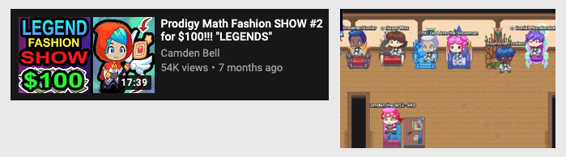
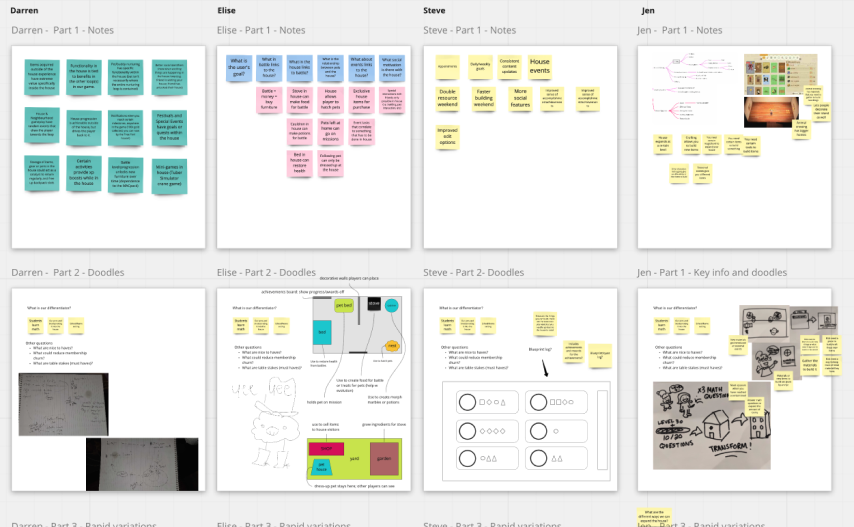
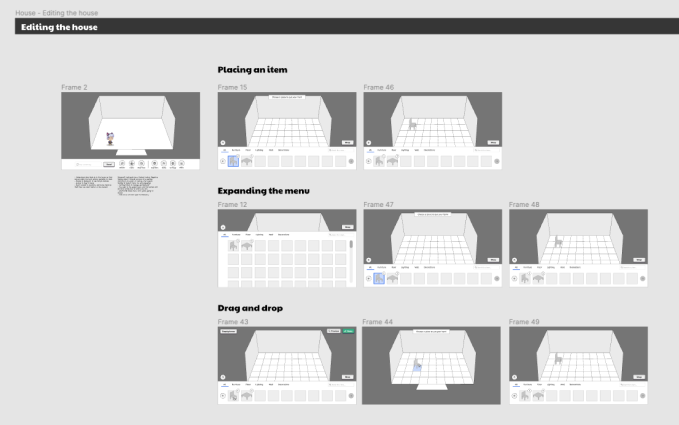

Case Study
Crafty House
Background
While observing Prodigy players through social media and playtesting, we noticed an interesting trend: players were creating their own ‘fashion shows’ using their houses in the game. They would invite neigbours over, swap battle gear and live stream these events. The dynamic is similar to Animal Crossing being streamed on Twitch.
Essentially, players were creating their own fun in a way that was never expected or intended! Of course, we wanted to reward them by making this type of gameplay easier, more fun... and also educational!
Project Goal
After the above realization, we were given a very clear business goal to start things off: ”Reduce monthly player churn by 30% by launching a new in-game feature.”
We aimed to achieve this by appealing to a new demographic of players by adding a ‘house’ gameplay style within the existing battle-based game.
Prodigy has a large user base of ‘RPG’ players, but the idea was to grow by engaging with a new player persona. Our team was tasked to explore that idea.
In this case study, we’ll cover a lot of early exploration work since this feature is ongoing. I’ll be highlighting my experience with early exploration, design facilitation, and ideation with Game Designers.
Team Structure
The structure of this project is a little different from typical product teams. There was a need to cross departments on this once, since the plan was to iteratively release this into an existing (live) game. Quality Assurance, Engineers and a variety of Product Managers are all stakeholders.
I was the sole Product Designer pulling in feedback from all above stakerholders, and facilitating workshops with Game Designers so that we were moving forward in an aligned way.
Design Process
Player Personas
Before anything, we needed a strong defintion of player personas to work from. ‘Crafting and decor' was an early idea for this project, but we needed some context of the reasons we were pursuing this type of gameplay.
I referenced this and this to come up with a
Mindmapping
With the project goal and Persona acting as a guide throughout, I facilitated several workshop meetings with the design team in following formats:
- Brainstorming 1: Ideation and Effort/Value
- Brainstorming 2: Prototyping Scope
- Assumptions and Questions
- Research - Action Items
- Experience Roadmap
These happened virtually in Miro over a two-week period. After completing these exercises with the design team, we were left with a solid list of achievable game features, as well as questions we would need answered help inform this design work!
I can’t share explicit details on these exercises, but you can view it at a high level here!
From there we moved into whiteboarding sessions exploring the top four ideas we discovered.
- Resource gathering / Crafting (goals)
- Neighbourhoods (social)
- Parties (social)
- Customizing furniture (creativity)
From there we moved into whiteboarding sessions, exploring the top four ideas we had discovered.
Wireframes
The result of this work allowed us to move to the next phase (‘Pre-Production’) and gave PMs enough background to turn these ideas into a 3-phase release plan.
This work is still in development, but you can see a sample of NDA-friendly wireframes here. These are currently at a low-fidelity stage, made in Figma.
Summary
While we have not even reached production yet, I think there is a lot of value shown here in kickingg off a project with a solid design process in mind. There will be a lot more to come on this one from research and playtesting.
One other benefit of this design process was getting buy-in on a ‘Heuristic Audit’ of the current House feature. This was performed in collaboration with the UX Research team, and shared with product teams using an app called Dovetail.